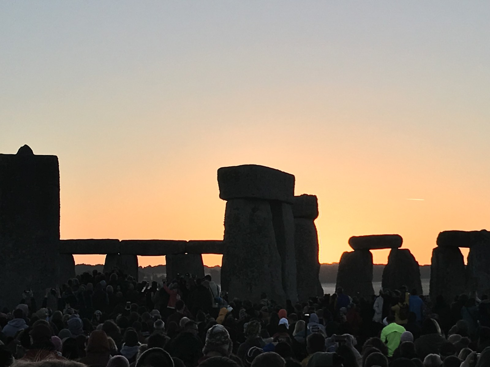
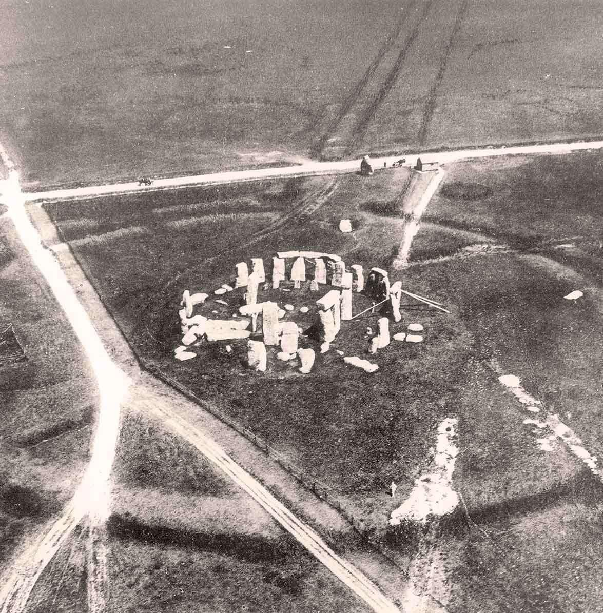
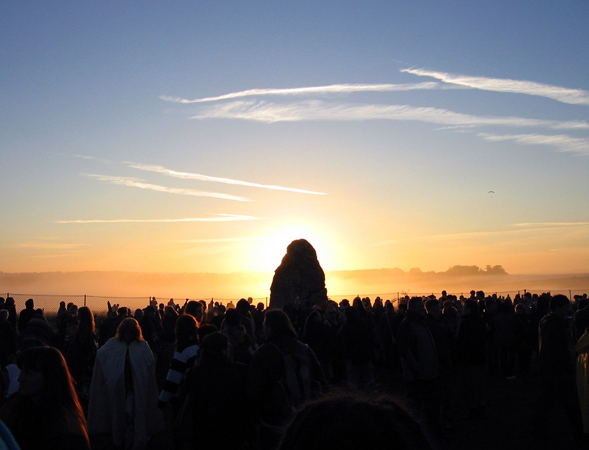
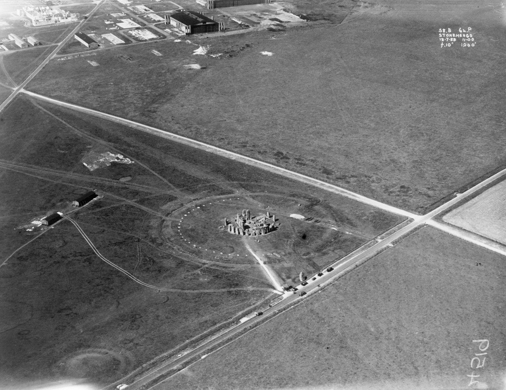

#01 Stonehenge 巨石阵
The Mystery：Built in multiple phases, Stonehenge's heaviest sarsen stones weigh about 25 tonnes, while its "bluestones" came from the Preseli Hills of Wales, 225 km away. How Late Neolithic people moved these blocks over such distances and raised them in precise mortise-and-tenon joints — without wheeled vehicles or metal tools — remains unresolved. The monument's main axis aligns with the midsummer sunrise; whether it served as an observatory, a burial ground, a healing sanctuary, or a place of ancestor worship has been debated for over a century. A 2024 study further traced the central Altar Stone to northeastern Scotland, some 750 km away, adding a new transport puzzle.
Mainstream Archaeological View：A multi-phase ritual and funerary monument complex; the solstitial alignments served a seasonal calendar and ancestor cult, reflecting the complex social organisation of Late Neolithic society.
Open Controversy：How the bluestones were transported is Stonehenge's longest-running debate. In 1923 geologist Herbert Thomas first traced them to the Preseli Hills of Wales and argued for human transport; UCL archaeologist Mike Parker Pearson further holds the overland route most likely — a team of 60 could move a 2-tonne stone on a wooden lattice. Geomorphologist Brian John, however, has long championed glacial transport in books such as The Bluestone Enigma, claiming the Irish Sea Glacier delivered the stones to Salisbury Plain for people to collect. Petrographic work by Bevins et al. (2025) counters that his key evidence, the Newall boulder, is a human-transported rhyolite fragment, leaving the glacial theory 'lacking evidential support.' On function, astronomer Gerald Hawkins claimed in Stonehenge Decoded (1965) that the monument was a prehistoric astronomical 'computer'; Parker Pearson's Stonehenge Riverside Project instead interprets it as a cremation cemetery and centre of ancestor worship. The two camps remain at odds.
Photographs：

Photo: Simon Burchell · CC BY-SA 4.0

Photo: Diego Delso · CC BY-SA 4.0

Photo: Diego Delso · CC BY-SA 4.0

Photo: Callyclan · CC BY-SA 4.0

Photo: Philip Henry Sharpe · Public domain

Photo: Andrew Dunn · CC BY-SA 2.0

Photo: Royal Air Force · Public domain


%2C_1st_cent._CE%2C_Saudi_Arabia_(10).jpg)
%2C_Proto-Hegra_1_style%2C_Hegra_(Mada%27in_Salih)%2C_the_kingdom%27s_second_Nabatean_capital_after_Petra%2C_Saudi_Arabia.jpg)
%2C_the_kingdom%27s_second_Nabatean_capital_after_Petra%2C_Saudi_Arabia.jpg)


.jpg)


_10.jpg)